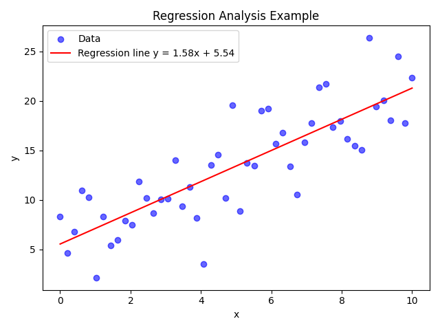

回帰分析と線形モデル
回帰分析は、ある変数（目的変数）が他の変数（説明変数）とどのような関係にあるかを明らかにするための手法です。目的変数を予測するために、線形関係や非線形関係をモデル化します。
回帰分析の概要
最も基本的な単回帰では、1 つの説明変数を用いて目的変数を予測します。この場合、モデルは \(y = a x + b\) の形で表されます【499011224948310†L79-L92】。説明変数が複数ある場合は重回帰と呼ばれ、複数の変数を組み合わせて目的変数を説明します【499011224948310†L79-L92】。
回帰分析では、説明変数と目的変数の関係の強さや方向を示す推定係数を求め、その係数が統計的に有意であるかを検定します。また、回帰モデルの適合度を確認するために決定係数（R2）などの指標を用います。
実例: 人工データを用いた回帰
下図は人工的に生成したデータに対し、最小二乗法で求めた回帰直線を重ねた例です。青い点はデータ点、赤い線は推定した回帰直線です。回帰係数によって直線の傾きや切片が決まり、データの傾向を表します。

単回帰と重回帰の比較
| モデル | 数式 | 特徴 |
|---|---|---|
| 単回帰 | \(y = a x + b\) | 1 つの説明変数で目的変数を予測【499011224948310†L79-L92】 |
| 重回帰 | \(y = a_1 x_1 + a_2 x_2 + \cdots + b\) | 複数の説明変数を組み合わせて予測。モデルの自由度が高くなる。 |
回帰分析は経済学や自然科学、機械学習などさまざまな分野で利用されており、モデルの仮定を理解しながら活用することが重要です。